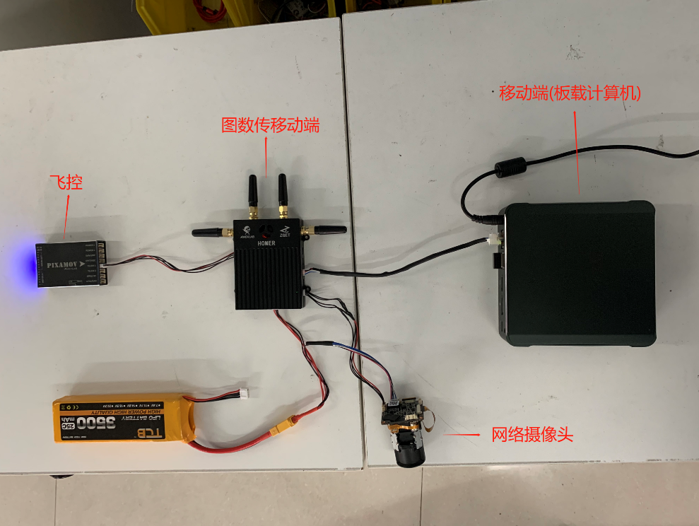
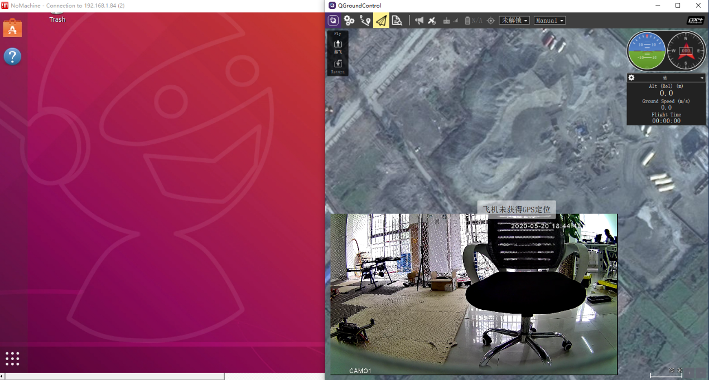
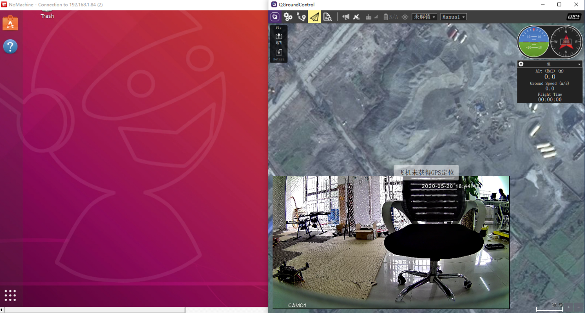

第八章 图数传移动端连接飞控¶
8.1 连接飞控¶
- 1.把飞控的串口与图数传移动端的串口相连，例如下图。

- 2.查看图数传移动端背面的默认串口IP和端口号，例如下图串口IP为192.168.1.51，端口号为5151.

3.按照前面章节的介绍，将图数传移动端和移动端（如板载计算机或TX2），图数传地面端和PC端连接配置好。
- 4.在PC端命令行ping图数传移动端的串口IP，ping通说明连接正常。

- 5.打开QGC地面站，添加连接。选择TCP类型，分别输入图数传移动端串口IP和端口号。

- 6.QGC地面站连接飞控成功显示如下画面。

8.2 整体效果¶
- 1.飞控连接成功后，可按前面章节介绍，添加网络摄像头，整体接线如下。
- 
- 2.打开QGC地面站，按照前面章节的介绍添加网络摄像头RTSP的URL连接，显示效果如下。

- 3.配合前面章节的介绍，可以在PC端打开NoMachine远程访问移动端(板载计算机或TX2等)，同时打开地面站查看飞控数据和网络摄像头图像，效果如下。
 
